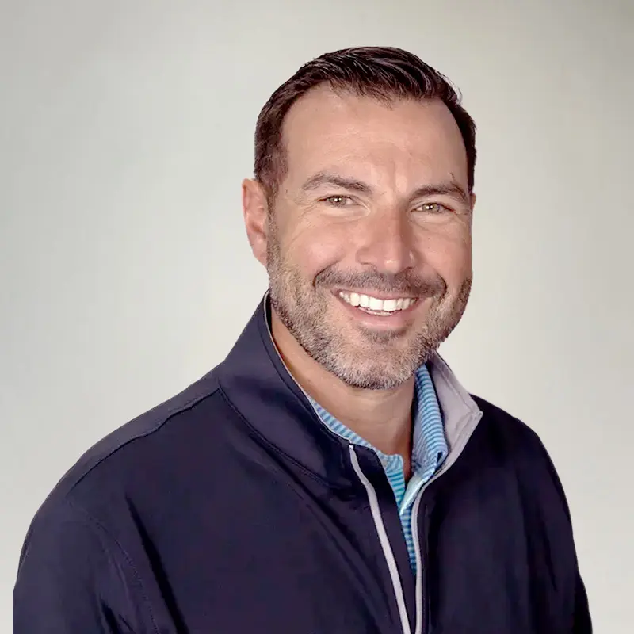
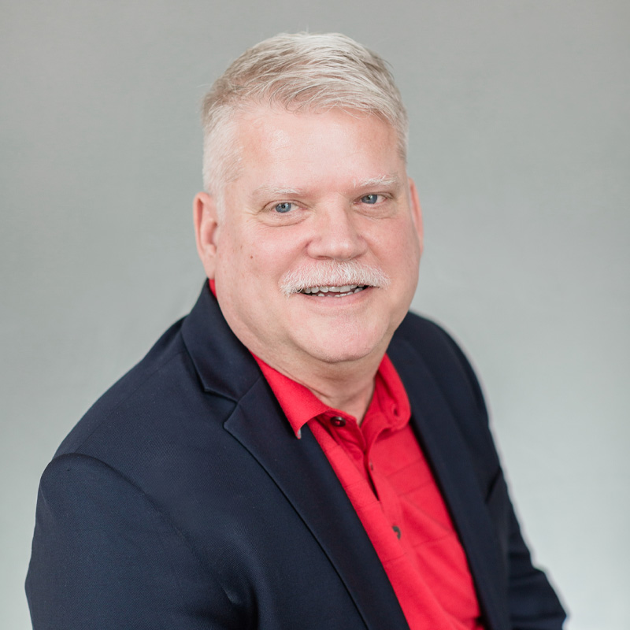

Our Leadership Team
Decades of combined expertise in medical device manufacturing, engineering, and operations.

Stephen Bates
Founder
Founded Global Interconnect in 1995 after building a career in finance, sales, and operations in the interconnect industry. A Babson College graduate, Stephen's vision established Gii as a trusted partner to the world's leading medical device OEMs.

Todd Squire
President
Joined Gii in 2004 as Senior Account Executive. Todd's deep expertise in customer relationships and business development has driven Gii's strategic growth into a global contract manufacturing leader.

Robert Gray
Chief Technical Officer
Gii's longest-serving team member, Bob started as Engineering Manager and grew into the CTO role. His deep technical knowledge of electromechanical systems underpins every engineering decision Gii makes.

Chet Potter
VP of Engineering & R&D
Joined Gii in 2013 as a Quality Engineer and rose to VP of Engineering and R&D. Chet leads Gii's product development, design-for-manufacture initiatives, and continuous engineering innovation.

Scott Burns
VP of Sales
Scott drives Gii's business development strategy and manages key OEM relationships. His technical background and commercial acumen help customers find the right manufacturing solution for every program.

Jacqueline Christensen
Director of Finance
Joined Gii in 2005 as Accounting and Administrative Coordinator. Jacqueline manages Gii's financial strategy and operational efficiency, ensuring the company's sustainable growth and fiscal health.

Troy Mauk
Director of Global Procurement
Joined Gii in 2007 as Purchasing Manager. Troy oversees Gii's global supply chain strategy, supplier partnerships, and procurement operations across our global manufacturing network — US, Americas, and Asia.

Jonathan Goodwin
Director of Engineering
With over 35 years of electro-mechanical development and manufacturing engineering experience, Jonathan leads Gii's engineering team in delivering precision solutions for the most demanding medical device applications.

Mike Melkonian
Director of Project Engineering
Joined Gii in 2014 as a Quality Engineer after a career in commercial HVAC engineering. Mike ensures project teams execute within scope and customer expectations, while continuously improving Gii's project processes and workflows.

Sarah Nugent
Director of Quality
Sarah leads Gii's quality management system, ensuring every product meets FDA, ISO 13485, and customer-specific requirements. Her team maintains the zero-defect culture that defines Gii's reputation in medical device manufacturing.